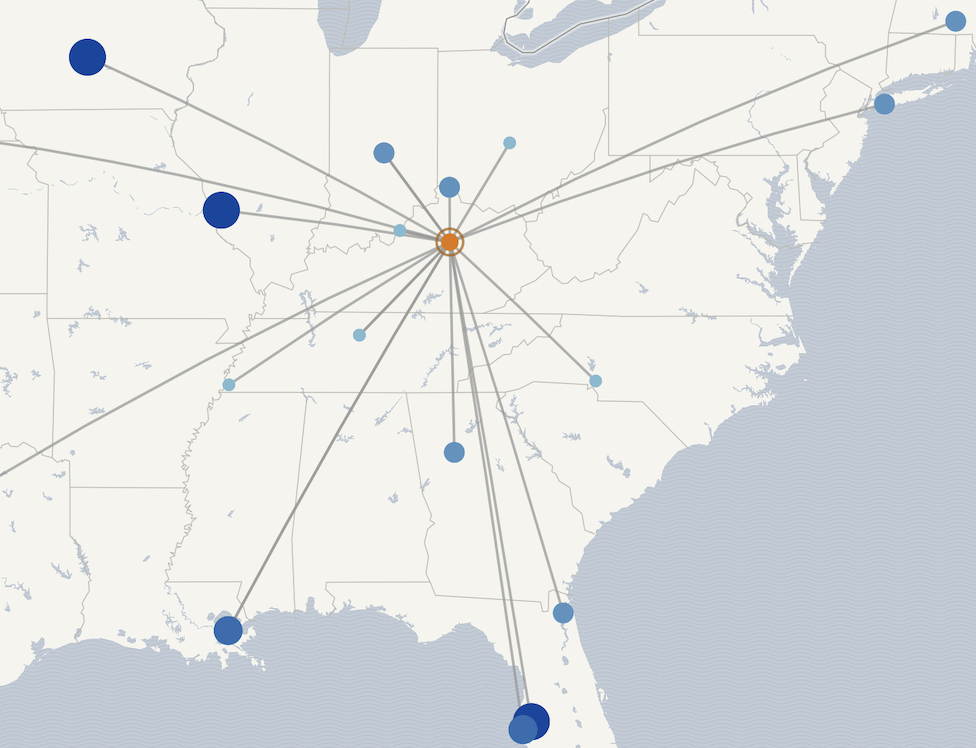

Lauren Oldham Jaromczyk
Data Visualization Developer
I'm a geographer-turned-software developer with expertise in interactive web maps. I build dashboards and data-driven decision support tools that bring clarity to difficult data. I currently work as a Data Visualization Developer at Cornell Lab of Ornithology.
Selected Work


eBird Status and Trends
Interactive dashboard for abundance, range, and trends data for 2900+ bird species. This is a professional project for Cornell Lab of Ornithology that focused on making complicated, high-resolution spatial bird data accessible to non-experts. It includes dynamic charts and maps that calculate population statistics on the fly.

North American Bird Declines
Scrollytelling app to accompany Science publication North American bird declines are greatest where species are most abundant. This is a professional project for Cornell Lab of Ornithology that highlights the real world impacts of bird declines by connecting the user to four specific bird species experiencing losses.

Basketball Travel Distance
Scrollytelling story + dashboard exploring travel distance to site locations for top-seeded men's basketball teams during March Madness. I created this project for my MS in Digital Mapping and completed the entire project lifecycle, including ideation, wireframing, data munging, and project execution.
Background
Core Skills
- JavaScript (ES6+), TypeScript
- D3.js, Chart.js, SVG & Canvas
- React, HTML, CSS
- Data analysis & preprocessing
- Responsive & accessible UI
Experience
- Senior Frontend Developer — Data Studio
- Web Developer — Analytics Co.
- Built interactive dashboards and storytelling visuals
- Partnered closely with designers & data scientists